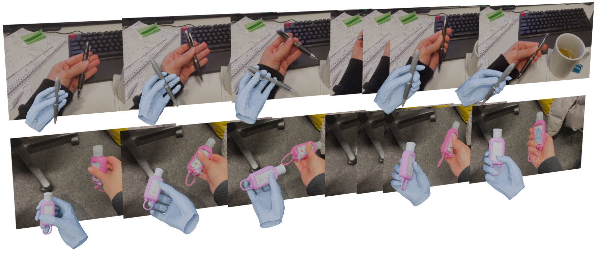
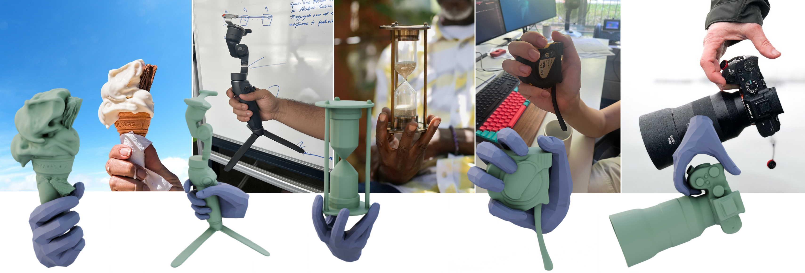
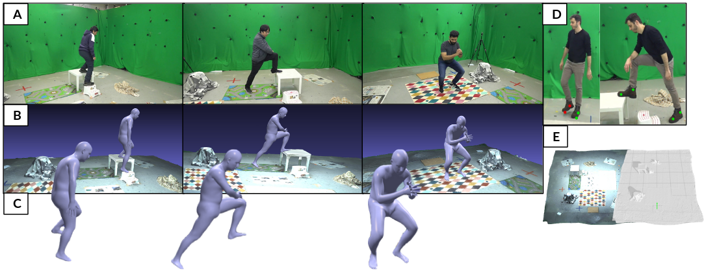
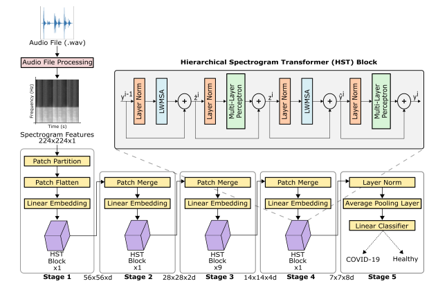
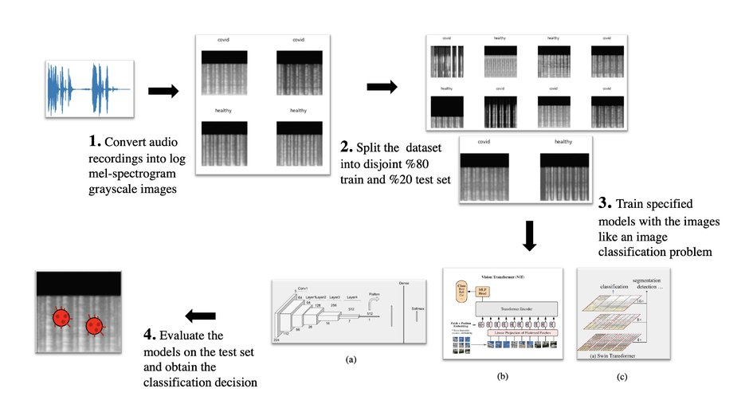
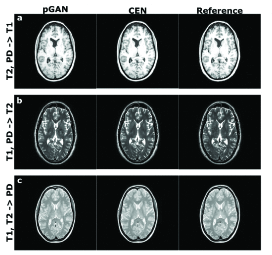
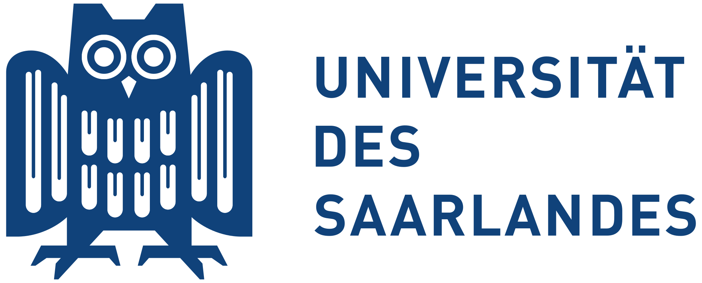
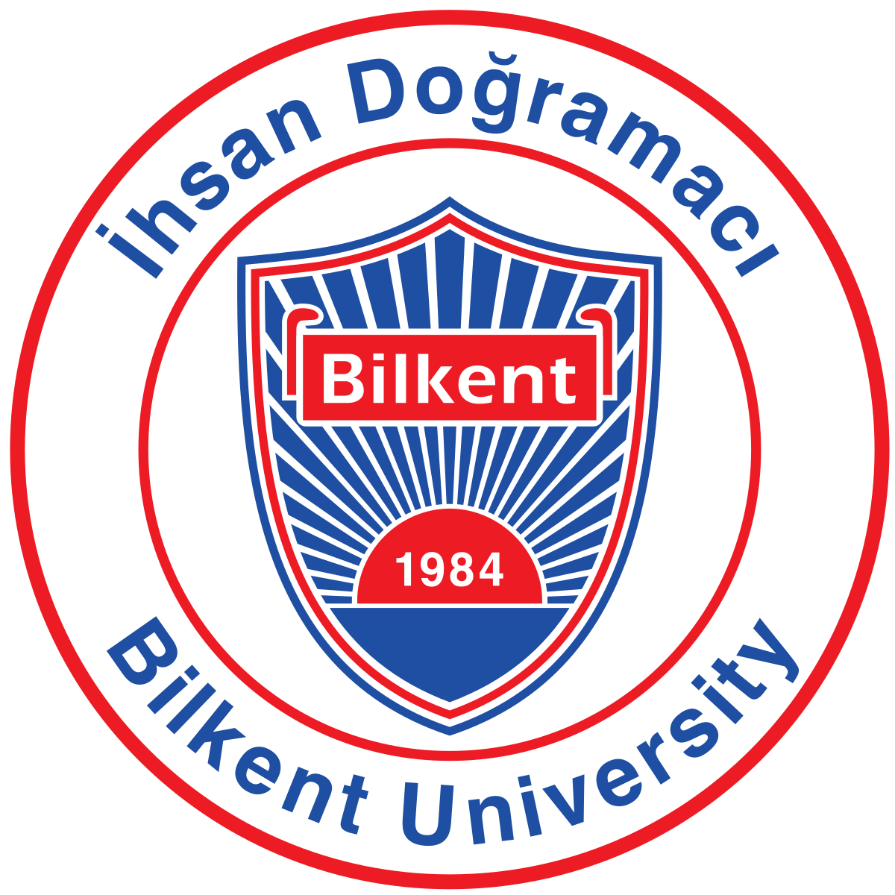
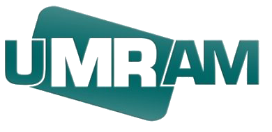
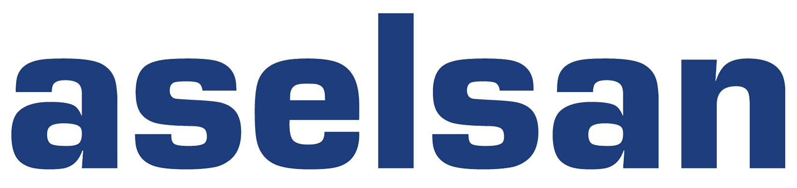

About
I am a PhD student at Max Planck Institute for Informatics, Visual Computing and Artificial Intelligence Department, advised by Prof. Christian Theobalt.
My research focuses on 3D hand-object interaction and scene understanding from visual and tactile input. I have also worked on physics-based 3D human pose estimation, diffusion model efficiency, and medical imaging. Ultimately, I aim to enable intuitive human-robot interaction through robust 3D perception.
News
- Nov 2025: Our paper FollowMyHold was accepted to 3DV 2026.
- Apr 2025: Our paper PhysDynPose was accepted to CVPR Rhobin Workshop 2025.
Research
-

-

Follow My Hold: Hand-Object Interaction Reconstruction through Geometric Guidance 3D Vision (3DV) 2026, Vancouver -

-

COVID-19 Detection from Respiratory Sounds with Hierarchical Spectrogram Transformers IEEE Journal of Biomedical and Health Informatics 2023 -

Detecting COVID-19 from respiratory sound recordings with transformers Proc. SPIE Medical Imaging 2022: Computer-Aided Diagnosis, San Diego -

Multi-Contrast MRI Synthesis with Channel-Exchanging-Network 30th Signal Processing and Communications Applications Conference (SIU) 2022, Safranbolu
Education
-
PhD student, MPII & Saarland University
July 2024 - present -

PhD student (preparatory phase), Saarland University via cs@maxplanck program
October 2022 - June 2024 -

BSc Electrical and Electronics Engineering, Bilkent University
Sept 2018 - June 2022
Ranked 3rd among 2022 graduates with GPA 3.96/4.00
Work experience
-

UMRAM
Undergraduate researcher working on COVID-19 detection and multi-contrast MRI synthesis
Dec 2020 - Sep 2022
Mentor: Prof Tolga Cukur -

ASELSAN
Digital design intern
Jul 2021 - Aug 2021